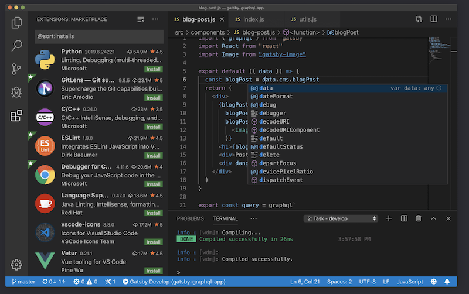
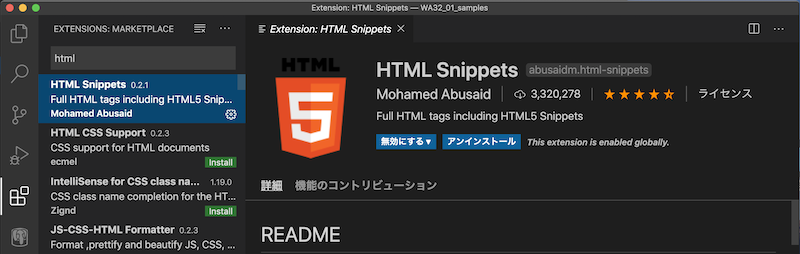
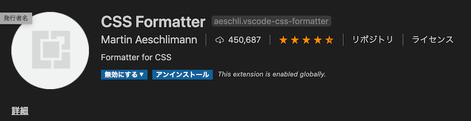
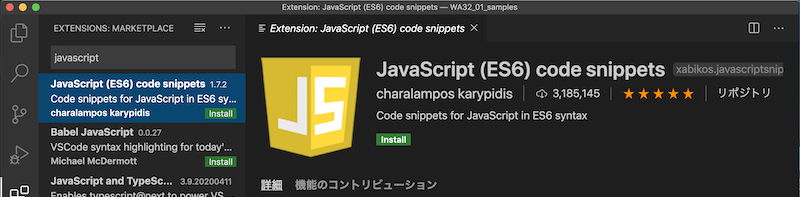
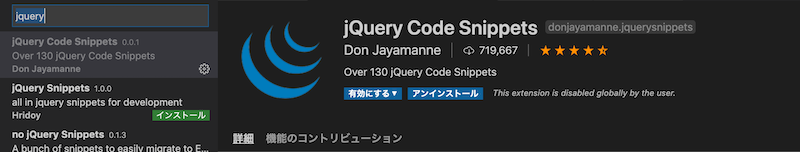
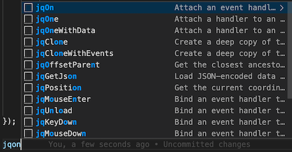
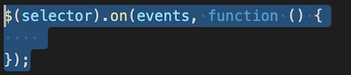
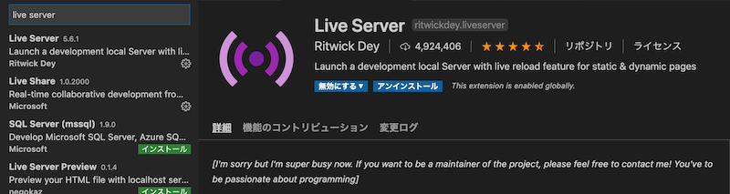
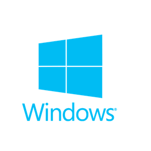
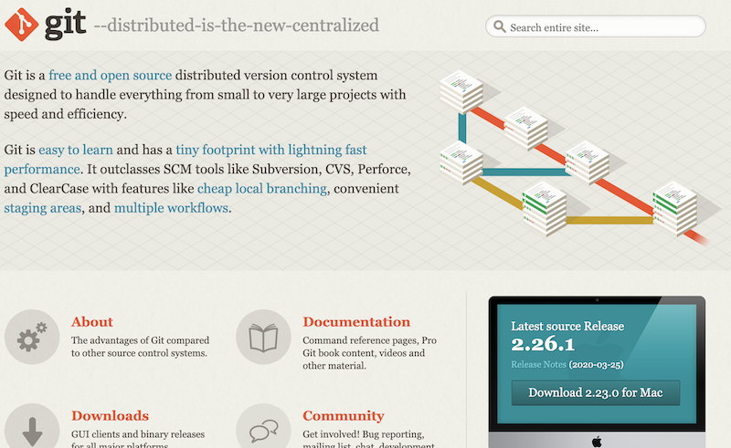

VSCode(Visual Studio Code)
- Microsoftがするのテキストエディタ
- Webので、シェアを
- Windows、Mac、Linux で
- よくコーディングできるエディタ
- 「VSCode」で

ショートカット
| Action | Mac | Windows |
|---|---|---|
| コマンドパレット | Shift + Command + 9 | Shift + Ctrl + 9 |
| エクスプローラー | Shift + Command + E | Shift + Ctrl + E |
| Shift + Command + X | Shift + Ctrl + X |
インストール
HTML Snippets

ショートカットで html タグをできる
CSS Formatter

CSSをしてくれる
JavaScript (ES6) code snippets

jQuery Code Snippets

「jq」とタイプするとがでる
 
Live Server

Webサーバをたてなくても、に表示できる
Git
Mac：インストール
$ git --version
git version 2.21.1 (Apple Git-122.3)
 Windows：インストーラダウンロード
ダウンロード

Clone （コピー）
$ git clone https://xxxx.com/xxxx.git
ににする
Pull （）
$ git pull
プロジェクトにの git（.git）が存在すれば、このコマンドでにアップデートできる